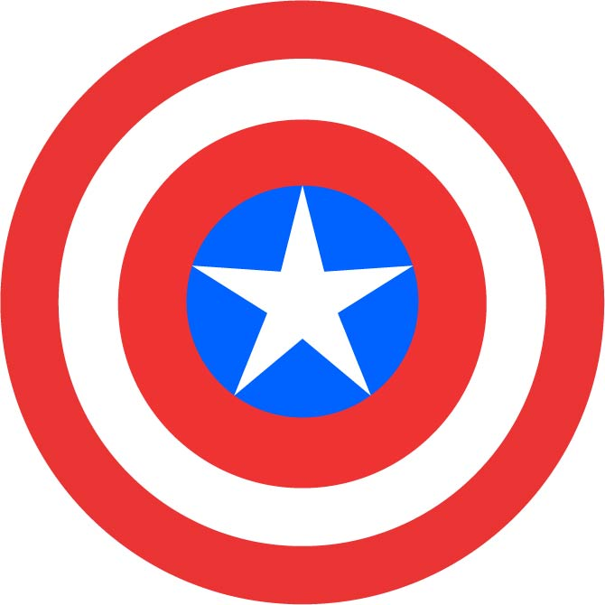

1 / 4

2 / 4

3 / 4

4 / 4

Adobe Illustrator er et vector baseret program der giver dig mulighed for at skabe alt lige fra web- og mobilgrafikker til logoer, ikoner, bogillustrationer, produktemballage og plakater.
Illustrator er anderledes end photoshop og det er vigtigt at kende forskel på disse 2 programmer og hvad formålet er med at bruge illustrator. Illustrator er et skaber-værktøj ment på den måde at man ikke ændre eller manipluerer eksisterende grafik, men skaber nyt grafik fra bunden af. Illustrator er en stærkt værktøj til at lave f.eks. logoer plakater. Man kan bruge det på den måde at ens grafik kan skaleres i alle størelser - lige fra små frimærker til store billboard reklamer på bygninger uden at miste kvaliteten.
Grunden til man kan skalere sin grafik unden at miste kvaliteten er fordi illustrator er et vector baseret program hvor photoshop er et pixel/bitmap baseret program. Vector er baseret på det man kalder for paths som består af et start og et slut punkt som har nogle positioner i forhold til hinanden. Når man så gemmer et illustrator fil så husker på disse koordinater hvor i en photoshop fil bliver den gemt i bestemt antal pixels. Derfor kan man i illustrator skaler uendeligt uden at miste skarpheden.

(https://www.presentationteam.com/bitmap-and-vector-graphics-in-presentations/)
For at lære vores redskaber at kende lavede vi nogle forskellige øvelser i vores undervisning.

Efter at have gennemgået de grundlæggende elementer i illustrator havde vi en K3 studiedag hvor vi skulle arbejde selvstændigt. Opgaven gik ud på vi skulle lave 5 ikoner med en tydelig grafisk sammenhæng. I min opgave startede jeg ud med at lede efter inspiration på hvad jeg kunne lave. Efter at have kigget lidt på behance, pinterest fandt jeg ud af jeg gerne lave et design der er simpelt med inspiration fra old school tattoo universet. Så efter jeg det gik jeg i gang med at lave det ved brug af paintbrush tool, pen tool og rectangle tool
Jeg forsøgt at holde det så simpelt som muligt men stadig med nogle små detaljer til at holde det spændende at kigge på og lidt dybde. Jeg brugte primært pen tool til at lave formen på ikonerne og pensel brush tool til at lave de små detaljer